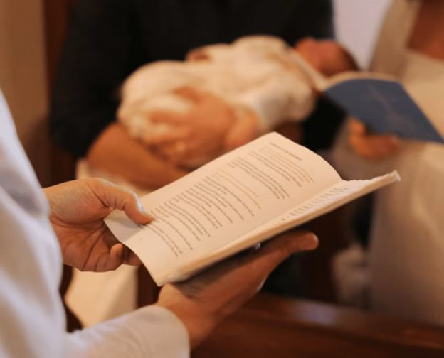

Chers futurs baptisés,
Toutes mes félicitations pour cette belle démarche spirituelle. Le baptême représente bien plus qu'un rite : c'est une ordonnance instituée par Jésus-Christ, une naissance spirituelle, une promesse d'espérance et de lumière. Il marque un tournant fondamental dans le chemin de foi.
Dans la tradition baptiste évangélique, le baptême est celui du croyant : il se reçoit lorsque la personne est en mesure de professer sa foi de manière personnelle et consciente. Pour les jeunes, cette démarche est généralement proposée à partir de l'âge de 12 ans et jusqu'à la majorité. Le baptême est également ouvert à tout adulte souhaitant témoigner publiquement de son engagement envers le Christ.
Ma vocation est de vous accompagner dans ce moment si précieux. En tant que Pasteur, je vous accueille au presbytère de Rhode-Saint-Genèse pour célébrer cette ordonnance dans un cadre intime et spirituel.
J'officie selon la liturgie baptiste évangélique.Le déroulement de la cérémonie.
Votre cérémonie de baptême se déroulera avec soin selon les étapes suivantes :
- Accueil et introduction
- Lecture biblique et message adapté
- Profession de foi personnelle
- Baptême par immersion (ou affusion)
- Remise du certificat de baptême
Une rencontre préalable est organisée pour préparer ensemble cette cérémonie et échanger sur la signification spirituelle de cette ordonnance.
Modalités et participation.
Forfait Célébration à 150 € Afin que vous puissiez vivre ce moment en toute sérénité, cette participation inclut la préparation, la célébration et la remise du certificat de baptême.
Pour les baptêmes multiples, une participation supplémentaire de 50 € par baptisé est demandée.
Pour les personnes en difficultés financières, le baptême peut être célébré gracieusement (réservation par téléphone uniquement).Une question ?
Pour toute demande particulière, rendez-vous sur la page de contact.
Et si votre choix est fait, pensez à réserver dès maintenant votre cérémonie ci-dessous.
Réserver votre baptême
🗓️ Je suis disponible les lundis, jeudis et samedis.